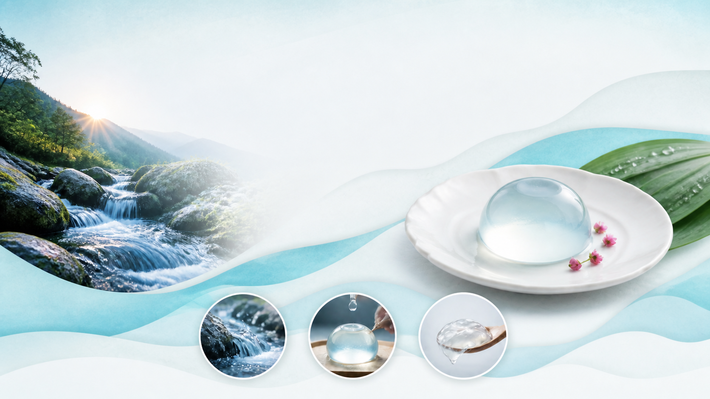
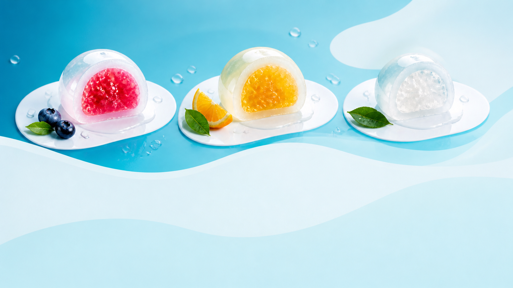
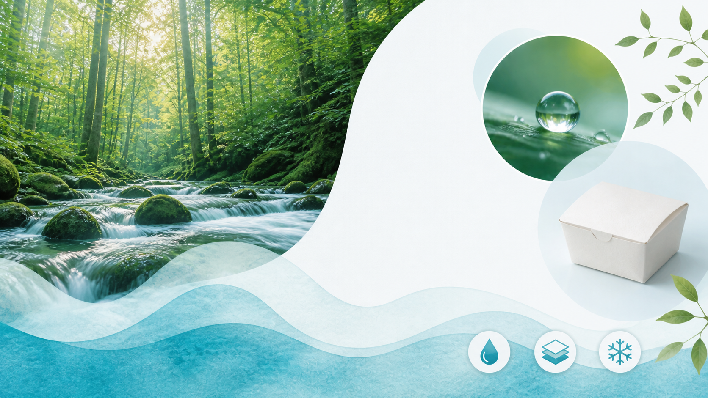

CLEAR WATER MOCHI
清らかな天然水を、ふるんとやわらかなひとくちの余韻に仕立てました。

OUR STORY
朝の森を流れる水のように、澄んで、軽やか。素材を重ねすぎず、口どけの瞬間を磨きました。

THREE FLAVORS
きゅんと甘酸っぱい、紅いしずく。
陽だまりのように、明るく爽やか。
水そのものを味わう、澄んだ余韻。
SERVING RITUAL

FROM THE SOURCE
水を育む森に敬意を払い、紙の使用量を抑えた箱と、必要な分だけ冷やす製法を選んでいます。
A MOMENT OF COOL
雪しずく 6個入り（3種×2個）2,480円 税込・送料別